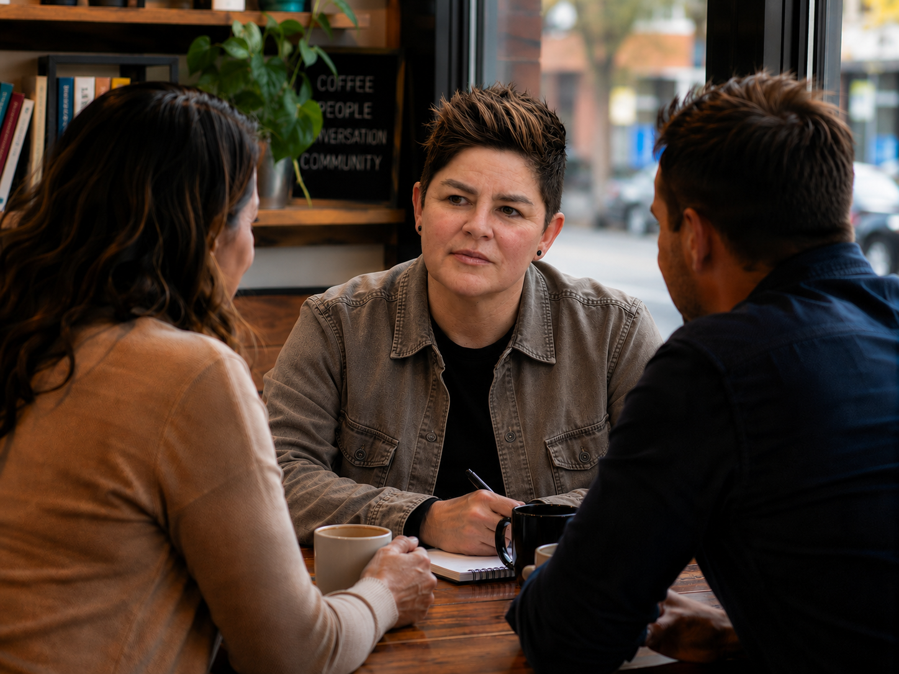
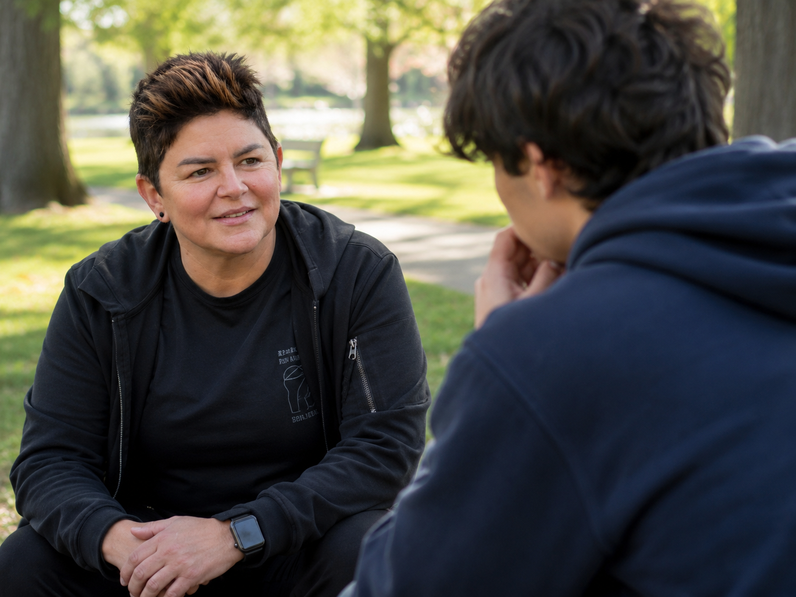
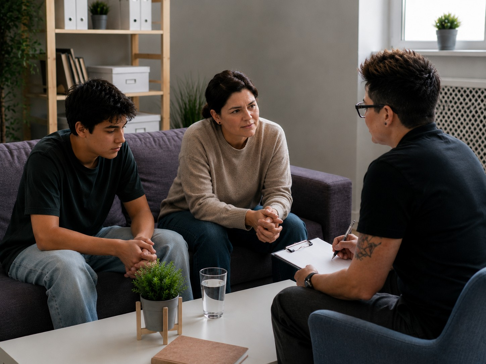
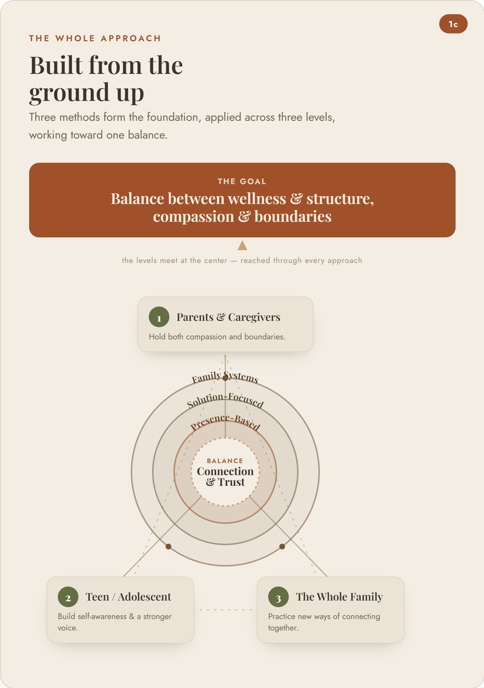

Coaching for parents & caregivers of teens
You don’t have to figure this out alone.
Drawing on more than 20 years of experience in both behavioral and mental health, as well as family/domestic crisis intervention, de-escalation, and forensic interviewing — I help parents rebuild connection and hope with the teenagers they love — even when it feels impossible right now. My coaching is inter-generational, presence-based, and solution-focused. I remain fully here with you, while drawing from deeply-rooted family histories, staying present and centered on what’s already working, and remaining realistic/solution-focused when it comes to what’s challenging your day-to-day parenting experience.
If you’re here because your teenager is struggling and you feel out of answers — you’re not alone, and this isn’t as hopeless as it feels right now.
Certifications & Training
- Trauma-Informed Crisis De-escalation (CIT)
- Forensic Interviewing — Child & Adolescent Focus
- Motivational Interviewing
- Advanced Domestic Violence Response
Hi, I’m Michelle
Two decades in the hardest rooms a family can face.
I spent over two decades working in behavioral health and family crisis intervention, much of that time responding to the moments families fear most: crisis, trauma, and the breakdown of trust between a parent and child. As a crisis responder in hospital behavioral health units, I sat with kids in their worst moments and worked to de-escalate, stabilize, and reconnect them with the people who love them. As a family intervention specialist, I’ve spent countless hours inside the actual homes of families whose teens were at risk — not in an office, but at the kitchen table, in the hardest conversations, helping parents and teens rebuild safety, communication, and trust in the middle of real life. Alongside that work, my background as a Special Victims Unit detective gave me additional training in forensic interviewing with children and teenagers and in testifying in court to protect them.
Most parents I work with are trying to hold two things at once: warmth and structure, compassion and consequences, connection and accountability. It’s one of the hardest balances in raising a teenager, and very few people are trained in both halves of it. My behavioral health and in-home family intervention background taught me how to understand what’s really driving a teenager’s behavior — the anxiety, the shame, the disconnection underneath it — and how to help a whole family heal together. My law enforcement background, especially my years in the Special Victims Unit, adds another layer: knowing how to hold boundaries and accountability firmly, without losing the relationship in the process. I bring all of that training to every family I coach, so you don’t have to choose between being the parent who understands and the parent who holds the line — for yourself, and for your teenager.
Today, I bring that same experience into a different role: walking alongside parents and caregivers as a coach. As a family intervention specialist, I’ve worked directly inside homes with families whose teens are at risk — helping them navigate crisis, rebuild trust, and create real safety, communication, and connection, without losing hope or losing each other. As a Critical Incident Stress Debriefing Facilitator, I help people process the hardest moments of their lives so they can move forward instead of getting stuck.
I’m currently completing my Master’s degree in Mental Health Counseling, and I hold certifications in trauma-informed crisis de-escalation, forensic interviewing with a child and adolescent focus, and motivational interviewing — tools I use every day to help families move from conflict to connection.
“I’m not coming to you with a textbook. I’ve been in the room during the worst days a family can face — custody battles, abuse investigations, suicide risk, addiction, runaway teens — and I’ve seen what actually helps.”
Based in Salem, Oregon, I provide in-person coaching in the Salem area, and virtual coaching for families across the United States. I work with parents and caregivers raising teens dealing with anxiety, depression, self-harm, substance use, defiance, or disconnection. My goal is simple: to help you feel less alone, more equipped, and more confident holding both compassion and boundaries with the teenager you love.
How I Can Help
What we can work on together
Rebuilding Connection & Communication
For parents whose teen has shut them out. We’ll work on how to talk — and listen — in a way that opens the door back up instead of closing it further.
Navigating Crisis & High-Risk Moments
Support for families facing anxiety, depression, self-harm, or substance use — grounded in real crisis de-escalation experience and a steady, present approach that looks for what’s already helping, not just what’s wrong.
Balancing Boundaries & Connection
Finding the line between compassion and accountability is one of the hardest parts of parenting a teenager. We’ll build a practical plan that holds both — boundaries that stick, and a relationship that survives them.
Flexible Coaching Sessions
In-person in the Salem, Oregon area, or online for families anywhere across the United States — whatever fits your life right now.
Investment
Coaching Packages & Rates
Every family's needs are different. Choose the option that fits how much support you need right now — and how you meet is always shaped around your family, whether that's you, your teen, or all of you together.
Hourly Coaching
$150/hr
Time can be spent with the parent(s)/caregiver(s), the teen/adolescent, or the whole family — whatever your situation calls for that week.
Best Value
Monthly Package
$400/mo
- 1 Parent/Caregiver coaching session
- 1 Teen/Adolescent coaching session
- 1 Family session
Save $50/month — $600/year — compared to booking each session hourly.

Parent / Caregiver Sessions
Work directly with Michelle to understand your teen's behavior, rebuild connection, and develop practical strategies for managing conflict and maintaining boundaries with love.

Teen / Adolescent Sessions
Help your teenager develop their own perspective, build resilience, and strengthen their voice in the family system. Sessions focus on what they need to feel heard and supported.

Family Sessions
Bring the whole family together to rebuild communication, increase understanding, and work on solutions as a team. These sessions help everyone feel heard and invested in change.
Why This Approach Is Different
Real experience, not a textbook.
I know how to talk to a teenager who has shut everyone else out. I know how to help a parent stop feeling like they’re failing and start feeling like they have a plan. Most training programs cover one side of this work — the emotional side, or the behavioral side. My career has covered both: understanding what’s happening underneath a teenager’s behavior, and knowing how to hold real boundaries and accountability without breaking the relationship. That combination is what helps a family find the balance between wellness and structure — not from a course, but from two decades in the room during the hardest days a family can face.

Questions
FAQs
What’s the difference between coaching and therapy?
Coaching is forward-focused and practical — it’s about giving you support, perspective, and tools to navigate what your family is facing right now. It isn’t a substitute for therapy, diagnosis, or medical treatment. If your family also needs clinical care, I’m glad to help you think through that alongside our work together.
Do I need a referral to get started?
No referral is needed. You can reach out directly to schedule an initial conversation.
Do you work with teens directly, or just with parents?
My coaching is built around supporting you as the parent or caregiver. Depending on your family’s situation, some sessions may include your teen — we’ll talk through what makes sense together.
Is what we discuss confidential?
Yes. What you share stays private, with the same kind of common-sense exceptions that apply in any helping relationship — namely, if there’s a serious safety concern for you, your teen, or someone else.
Do you offer online sessions?
Yes. I provide in-person coaching in the Salem, Oregon area, and virtual sessions for families anywhere across the United States.
What if we’re in the middle of a crisis right now?
If your teen is in immediate danger, please call or text 988 (Suicide & Crisis Lifeline) or call 911 first. Coaching is a valuable next step once the immediate crisis is stabilized — reach out any time and we’ll figure out the right next move together.
What’s your cancellation policy?
Please give at least 24 hours’ notice if you need to cancel or reschedule a session.
How do I know if this is the right fit?
Reach out for an initial conversation. If it doesn’t feel like the right fit, I’m happy to help point you toward other support that might serve your family better.
Get in Touch
Let’s talk about your family.
If you’re ready for support that’s grounded in real experience and real compassion, I’d be honored to work with you. Send a message below, or reach out directly.
- (801) 750-4736
- michelleshepcoaching@gmail.com
- In-person locally near the Salem, Oregon area, online nation-wide.